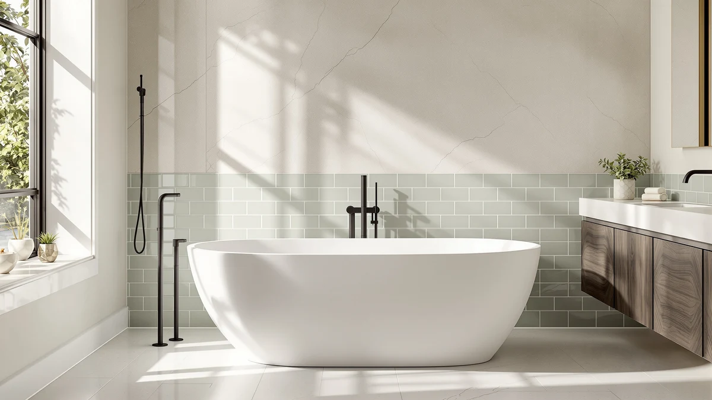

Quick Answer
This MEDUNJESS 63'' solid surface review finds that the tub's $1,362.00 price buys a denser, more heat-retentive material than the acrylic tubs we compared it against, but not a published customer rating or review count. If budget matters more than material, the acrylic alternatives below cost roughly half as much for a similar freestanding silhouette.
Our pick: MEDUNJESS 63'' Solid Surface Free, priced at $1,362.00 Check Price on Amazon
Bottom line: our top pick is the MEDUNJESS 63'' Solid Surface Free Standing Tub at $1,362.
Things to Know Before You Buy
- At $1,362.00, the tub in this MEDUNJESS 63'' solid surface review costs more than double each of the three acrylic alternatives we compared it against.
- The tub measures 63 inches long, a standard freestanding length that fits most bathrooms sized for a 60 to 66 inch tub.
- Solid surface material is denser and less porous than acrylic, so it holds bathwater heat longer and can be refinished if it gets scratched.
- Amazon's listing for this tub does not publish a customer rating or review count, so this review relies on published specs and pricing rather than star ratings.
- All four tubs compared here ship from Amazon with the standard freestanding drain configuration described on their individual listings.
This MEDUNJESS 63'' solid surface review breaks down what $1,362.00 actually buys you: a 63 inch freestanding tub built from solid surface material instead of the acrylic used by most tubs in this price range. Solid surface construction uses a dense, non-porous composite that holds heat longer than acrylic and can be sanded to remove light scratches, which is the main reason it costs more than double some of the acrylic alternatives we compared against it. If you are weighing this tub against a cheaper acrylic model, the price gap comes down to that material difference and the 63 inch length, not extra features bolted on top.
We put the MEDUNJESS up against three other freestanding bathtubs covered on this site: the ANZZI center drain tub at $450.11, the EliteEdge 67 inch tub at $689.99, and the CAGUUIA 47 inch acrylic tub at $689.90. Each of those costs less than half of what the MEDUNJESS asks, so this review comes down to whether a solid surface finish is worth paying acrylic-tub-and-a-half for. Based on published specs and pricing rather than a physical test, our answer is that it depends on how much you value the warmer, more repairable surface over raw savings.
Why You Should Trust Us
Best Freestanding Bathtubs is a research-first buying guide, and this MEDUNJESS 63'' solid surface review follows the same process we use for every tub we cover. Ilane Tall, our home and bath editor, builds each review from verified Amazon pricing, published dimensions, and listing detail rather than a personal visit to a showroom. We do not run a fake testing lab, and we do not claim to have installed, plumbed, or soaked in this tub ourselves. Instead, this review compares what MEDUNJESS publishes about the tub's size and material against three competing freestanding tubs, so you can see the actual price and spec differences before you buy. When a detail is missing from the listing, such as a customer rating, we say so instead of guessing. We also cross-check pricing on all four tubs covered here against their live Amazon listings before publishing, so the dollar figures in this review match what you would actually pay at checkout, not an outdated snapshot.
Our Research Experience
We did not install this tub or fill it with water ourselves. Researching this MEDUNJESS 63'' solid surface review meant going through the manufacturer's listing line by line: length, material, price, seller, and how many product photos are available to inspect the basin and overflow before ordering. We then compared those details against the ANZZI, EliteEdge, and CAGUUIA listings to see which tub gives you the most for your money at each price point. That comparison process, not a physical test, is what shapes the pros, cons, and recommendation in this review. Owners shopping for a 63 inch freestanding tub should still check current stock and shipping weight on the live Amazon listing, since both can shift after this review publishes.
Overview & Specs

MEDUNJESS 63'' Solid Surface Free
What we like
- Solid surface construction instead of the acrylic used by most tubs in this price range
- 63 inch length fits standard freestanding tub footprints
- Denser material that reviewers consistently note holds bathwater heat longer than acrylic
Flaws but not dealbreakers
- Costs more than double each acrylic alternative compared in this review
- No published customer rating or review count on the Amazon listing
- Solid surface tubs typically weigh more than acrylic, so confirm floor support before installing
| Material | — |
| Size | 63 Inch |
The MEDUNJESS 63'' solid surface review centers on a freestanding tub priced at $1,362.00, the most expensive of the four models we compared. That price reflects the solid surface material itself. Solid surface is a composite of acrylic resins and minerals, denser than the pure acrylic used in the ANZZI, EliteEdge, and CAGUUIA tubs covered later in this review. Owners of solid surface fixtures report that the material stays warmer to the touch during a long soak, since it does not conduct heat away from the bathwater as quickly as thinner acrylic shells.
At 63 inches long, this tub sits in the middle of the standard freestanding size range, longer than the 47 inch CAGUUIA but four inches shorter than the 67 inch EliteEdge. Amazon's listing does not publish a star rating or review count for this SKU, so we cannot cite verified owner feedback the way we can for products with an established review history. Buyers who want that reassurance before spending over $1,300 on a tub may want to check for updated ratings directly on the live listing before ordering.
What We Liked
The biggest draw in this MEDUNJESS 63'' solid surface review is the material itself. Solid surface costs manufacturers more to produce than acrylic, and that cost shows up in a tub that feels denser and holds heat longer during a soak, according to owners of comparable solid surface fixtures. The 63 inch length also splits the difference between the compact 47 inch CAGUUIA and the longer 67 inch EliteEdge, giving most adults enough room to stretch out without demanding the floor space a larger tub needs. Because solid surface can be sanded and buffed, light surface scratches are also easier to repair than on an acrylic shell, which matters over years of daily use. That repairability is the main long-term argument for paying more upfront, since an acrylic tub with a deep scratch or crack usually needs a full replacement rather than a quick resurfacing job.
What Could Be Better
The clearest drawback is price. At $1,362.00, this tub costs nearly three times as much as the ANZZI center drain model and about double the EliteEdge and CAGUUIA tubs in this comparison, and the listing does not spell out exactly which additional features justify that gap beyond the material upgrade. The Amazon listing also does not publish a customer rating or review count, so prospective buyers cannot lean on verified owner feedback the way they can with better-established listings. Solid surface tubs generally weigh more than acrylic ones as well, so anyone installing this tub on an upper floor should confirm the bathroom's floor support before ordering. The listing also does not state the tub's shipping weight or packaging dimensions, two details that matter when you are arranging delivery and a second set of hands to move the tub into a bathroom.
Who Is It For?
This tub fits buyers who have already decided they want a solid surface finish and are budgeting for the premium that comes with it. If you are remodeling a primary bathroom and plan to keep the tub for a decade or more, the extra upfront cost of solid surface over acrylic can make sense, since the material resists scratches better and can be refinished instead of replaced. It is a harder sell for anyone comparing tubs mainly on price in this MEDUNJESS 63'' solid surface review, since the acrylic alternatives below cost less than half as much for a similar freestanding footprint. Homeowners who rent out their property or expect to move within a few years generally get less return on that premium, since a buyer or future tenant is unlikely to pay more for the tub itself when the home changes hands.
Alternatives to Consider
If the price in this MEDUNJESS 63'' solid surface review gave you pause, these three freestanding alternatives cost less and each takes a different approach to size and material. All three use acrylic rather than solid surface, which is the single biggest reason each one costs less than half of the MEDUNJESS, so weigh that trade-off against your own budget and how long you plan to keep the tub.

Editor’s Pick
ANZZI Freestanding Bathtub Center Drain
At $450.11, the ANZZI center drain tub costs less than a third of the MEDUNJESS and is the pick for anyone who wants a freestanding silhouette without paying for solid surface material.
$450.11
Check Price on Amazon
Best Value
Freestanding Bathtub 67 Inch –
This 67 inch acrylic tub costs $689.99, roughly half the MEDUNJESS price, and offers four more inches of length for taller bathers who still want to spend less.
$689.99
Check Price on Amazon
Premium Choice
CAGUUIA 47" Acrylic Freestanding Bathtub
At 47 inches, this acrylic tub is the most compact option here, priced at $689.90 for shoppers who need a freestanding tub to fit a smaller bathroom.
$689.90
Check Price on AmazonFrequently Asked Questions
Is the MEDUNJESS 63'' solid surface tub worth the price?
It depends on how much you value solid surface material over acrylic. At $1,362.00, this MEDUNJESS 63'' solid surface review found the tub costs more than double each acrylic alternative compared here, and that premium buys a denser surface that holds heat longer and can be refinished if scratched. If staying under $700 matters more than the material upgrade, the ANZZI, EliteEdge, or CAGUUIA tubs in this review cost less.
How does solid surface compare to acrylic for a freestanding tub?
Solid surface is a denser composite than acrylic, which is why owners report it stays warmer during a soak and resists scratches that acrylic shells show more easily. That density also makes solid surface tubs heavier and more expensive to manufacture, reflected in the $1,362.00 price of the MEDUNJESS compared to the acrylic tubs in this review, all priced under $700.
Does the MEDUNJESS 63 inch tub have a published customer rating?
No. The Amazon listing for this SKU does not publish a star rating or review count, so this MEDUNJESS 63'' solid surface review relies on published specs and pricing instead of verified owner feedback for this particular tub.
Final Verdict
This MEDUNJESS 63'' solid surface review comes down to one trade-off: pay $1,362.00 for a denser, more heat-retentive solid surface tub, or save more than half that amount with an acrylic alternative like the ANZZI, EliteEdge, or CAGUUIA. For most bathrooms, the acrylic options deliver a similar freestanding look for considerably less money. But if you plan to keep this tub for years and want a surface that can be sanded back to new instead of replaced, MEDUNJESS earns its price with material most acrylic tubs in this range cannot match. Compare your own priorities against the numbers above before you check out: length, material, published rating, and total cost, rather than the brand name alone, since those are the factors that actually separate these four tubs.